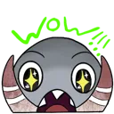

Origins
The Gang
Guild
Stories
Blurrg Rating
Blurrg Rating!
Roll a D20 and find out how much Blurrg likes you today!
(Or... try the secret password 👀)
🲠Roll D20
Unlock

Blurrg is waiting for your roll...